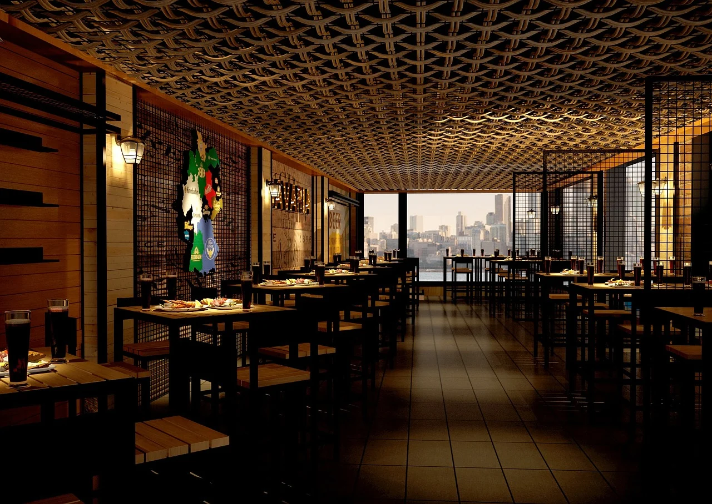

En El Mirador, nos apasiona ofrecer una experiencia gastronómica única. Nuestro equipo de chefs expertos se dedica a crear platos deliciosos utilizando ingredientes frescos y de alta calidad. Desde el momento en que entras por nuestra puerta, te invitamos a disfrutar de un ambiente acogedor y un servicio excepcional.
¿Quiénes somos?
